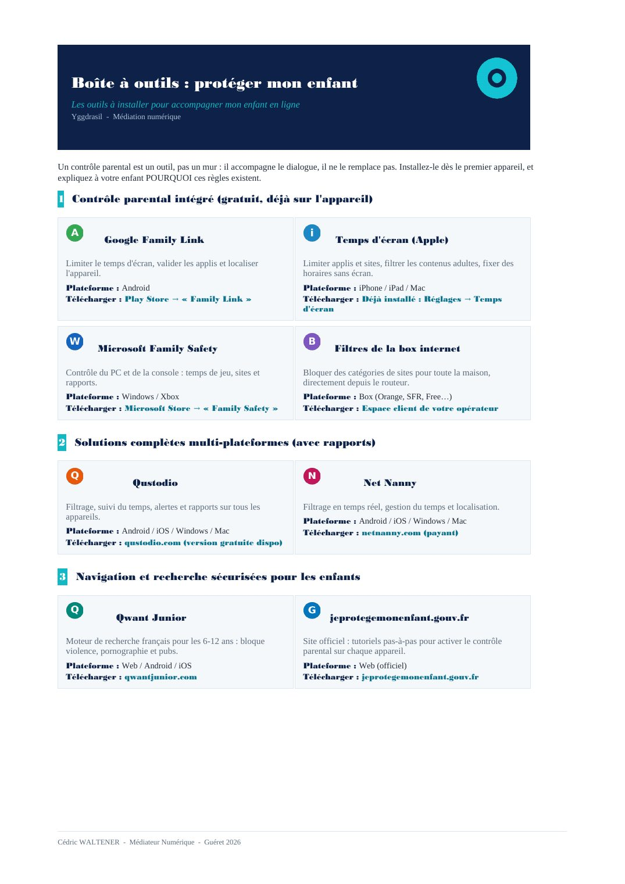
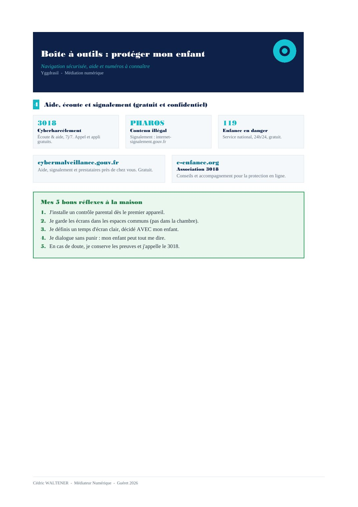

⏳ Vérification de votre niveau…


📄 Texte de la page (traduisible — les images ci-dessus restent en français)
Boîte à outils : protéger mon enfant Les outils à installer pour accompagner mon enfant en ligne Yggdrasil - Médiation numérique
Un contrôle parental est un outil, pas un mur : il accompagne le dialogue, il ne le remplace pas. Installez-le dès le premier appareil, et expliquez à votre enfant POURQUOI ces règles existent.
1 Contrôle parental intégré (gratuit, déjà sur l'appareil)
Google Family Link Temps d'écran (Apple)
Limiter le temps d'écran, valider les applis et localiser Limiter applis et sites, filtrer les contenus adultes, fixer des l'appareil. horaires sans écran. Plateforme : Android Plateforme : iPhone / iPad / Mac Télécharger : Play Store → « Family Link » Télécharger : Déjà installé : Réglages → Temps d'écran
Microsoft Family Safety Filtres de la box internet
Contrôle du PC et de la console : temps de jeu, sites et Bloquer des catégories de sites pour toute la maison, rapports. directement depuis le routeur. Plateforme : Windows / Xbox Plateforme : Box (Orange, SFR, Free…) Télécharger : Microsoft Store → « Family Safety » Télécharger : Espace client de votre opérateur
2 Solutions complètes multi-plateformes (avec rapports)
Qustodio Net Nanny
Filtrage, suivi du temps, alertes et rapports sur tous les Filtrage en temps réel, gestion du temps et localisation. appareils. Plateforme : Android / iOS / Windows / Mac Plateforme : Android / iOS / Windows / Mac Télécharger : netnanny.com (payant) Télécharger : qustodio.com (version gratuite dispo)
3 Navigation et recherche sécurisées pour les enfants
Qwant Junior jeprotegemonenfant.gouv.fr
Moteur de recherche français pour les 6-12 ans : bloque Site officiel : tutoriels pas-à-pas pour activer le contrôle violence, pornographie et pubs. parental sur chaque appareil. Plateforme : Web / Android / iOS Plateforme : Web (officiel) Télécharger : qwantjunior.com Télécharger : jeprotegemonenfant.gouv.fr
Cédric WALTENER - Médiateur Numérique - Guéret 2026
Boîte à outils : protéger mon enfant Navigation sécurisée, aide et numéros à connaître Yggdrasil - Médiation numérique
4 Aide, écoute et signalement (gratuit et confidentiel)
3018 PHAROS 119 Cyberharcèlement Contenu illégal Enfance en danger Écoute & aide, 7j/7. Appel et appli Signalement : internet- Service national, 24h/24, gratuit. gratuits. signalement.gouv.fr
cybermalveillance.gouv.fr e-enfance.org Aide, signalement et prestataires près de chez vous. Gratuit. Association 3018 Conseils et accompagnement pour la protection en ligne.
Mes 5 bons réflexes à la maison 1. J'installe un contrôle parental dès le premier appareil. 2. Je garde les écrans dans les espaces communs (pas dans la chambre). 3. Je définis un temps d'écran clair, décidé AVEC mon enfant. 4. Je dialogue sans punir : mon enfant peut tout me dire. 5. En cas de doute, je conserve les preuves et j'appelle le 3018.
Cédric WALTENER - Médiateur Numérique - Guéret 2026